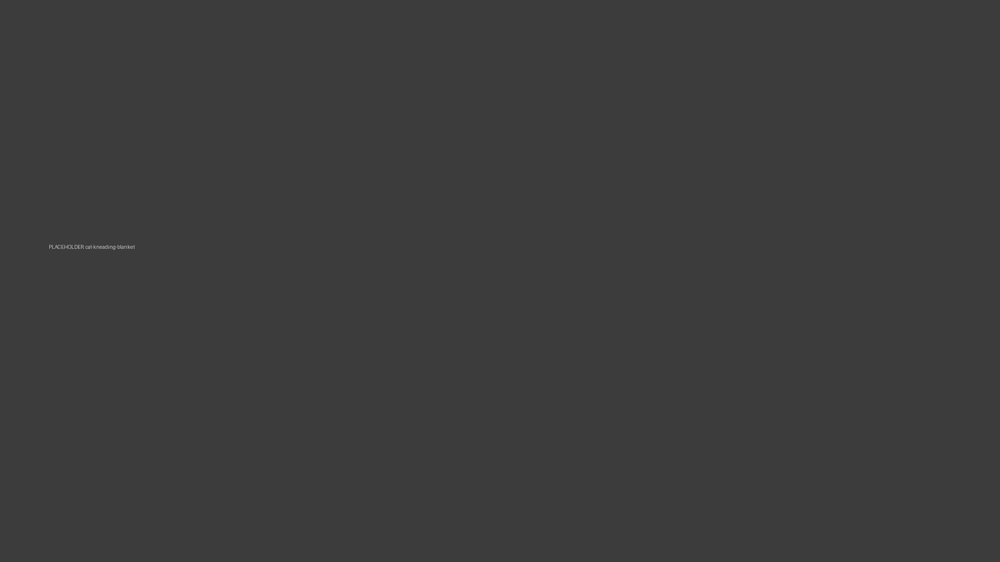

Кошка забирается на колени, начинает ритмично давить лапами — то левой, то правой — и включает мурчание на полную мощность. Это называется «молочный шаг», или кнединг, и за этим жестом стоит биология, уходящая корнями в первые часы жизни котёнка. Разберём, что именно происходит, чем отличаются разные типы топтания и на что стоит обратить внимание, если привычка резко изменилась.
Котята разминают молочные железы матери сразу после рождения. Ритмичное давление лапками стимулирует выработку молока — это рефлекс выживания, закреплённый в первые часы жизни. У кошки-матери это движение активирует выброс окситоцина, гормона привязанности и расслабления.
У взрослой кошки рефлекс остаётся. Он «отвязывается» от молока, но сохраняет эмоциональную нагрузку: топтание включается в моменты максимального комфорта и доверия. Когда кошка мнёт вас или одеяло, её мозг воспроизводит нейрохимию защищённости, которую она знала при матери.
Исследования в области этологии кошек показывают, что у стерилизованных кошек, взятых в дом котятами, кнединг встречается чаще и сохраняется дольше, чем у кошек, прошедших через уличный период. Это косвенно подтверждает: привязанность к человеку «активирует» тот же нейронный путь, что и привязанность к матери.
Не все «топталки» одинаковы. Этологи выделяют несколько вариантов, каждый из которых несёт разную информацию о состоянии кошки.
Мурчание кошки во время кнединга — не просто фон. Частота кошачьего мурчания находится в диапазоне 25–50 Гц. Исследования показывают, что вибрации в этом диапазоне снижают уровень кортизола у человека и замедляют сердечный ритм. Иными словами, «молочный шаг» работает как сеанс вибрационной терапии — для обоих.
Многие хозяева описывают, что засыпают под этот ритм или чувствуют выраженное расслабление. Это не случайность и не «слабость» — это физиология. Взаимная выгода от кнединга — одна из причин, по которой кошки и люди так органично сосуществуют тысячелетиями.
Интенсивность и частота кнединга зависят от нескольких факторов:
На подушечках лап расположены апокриновые потовые железы. Когда кошка разминает поверхность, она не только успокаивается, но и маркирует её своим запахом. Именно поэтому многие кошки предпочитают мять одно и то же место: плед, угол дивана, конкретную подушку — то, что уже пахнет «правильно».
Если кошка начала активно мять новые предметы в доме — это нормальная реакция на изменение обстановки. Она «переписывает» запаховую карту, восстанавливая ощущение контроля над территорией. Помогите ей: не убирайте «обжитые» вещи резко, дайте время адаптироваться.
Кнединг — в норме приятное и предсказуемое поведение. Обратите внимание на следующие изменения:
Если кнединг с когтями неприятен — не наказывайте кошку. Она не понимает, что делает что-то не то: это рефлекс. Вместо этого:
Кнединг — один из немногих жестов, в которых кошка буквально «говорит» вам о доверии на языке своего детства. Позволить ей это — хороший вклад в отношения.
Материал носит информационный характер и не заменяет очную консультацию ветеринара.